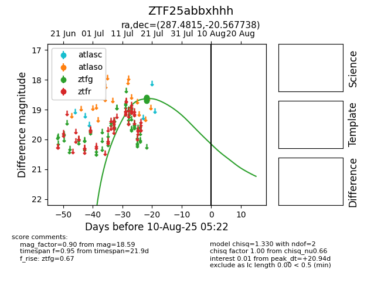

Target ZTF25abbxhhh at 2025-08-10 05:22, see:
FINK: fink-portal.org/ZTF25abbxhhh
Lasair: lasair-ztf.lsst.ac.uk/objects/ZTF25abbxhhh
ALeRCE: alerce.online/object/ZTF25abbxhhh
alt names
ZTF25abbxhhh (ztf,fink)
coordinates:
equatorial (ra, dec) = (287.4815,-20.56774)
galactic (l, b) = (16.3285,-13.14049)
photometry
last ztfg=18.59
7 ztfg detections
